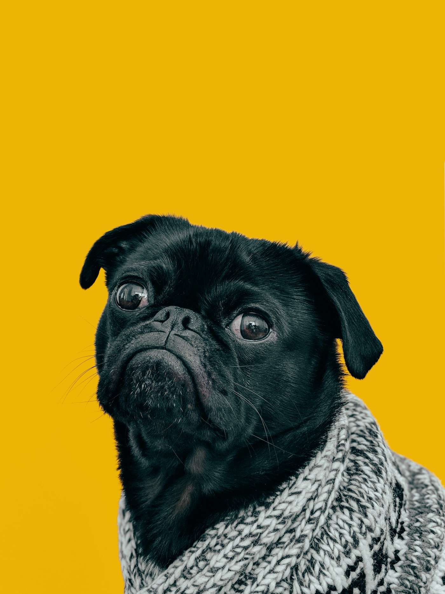

Banho
& bem-estar
Um cuidado inteiro, feito com calma, bons produtos e atenção ao jeito de cada pet.
agendar ↗guarapari · espírito santo
Cuidado, companhia e coisas boas para todos os dias que vocês ainda vão viver juntos.
↓um petshop local
para histórias reais
01 / a ideia
Tem o passeio que começa sem pressa. O banho que vira carinho. O petisco dividido em dois. A GuaraPets existe para cuidar do que deixa a vida comum muito melhor.
olha o que fazemos ↘
02 / o essencial
Um cuidado inteiro, feito com calma, bons produtos e atenção ao jeito de cada pet.
agendar ↗Alimentação, brinquedos e acessórios para uma rotina mais gostosa e possível.
falar com a gente ↗O resto a gente descobre junto, uma visita de cada vez.
03 / o nosso lugar
Less ordinary.
Mais inesquecível.
Na Praia do Morro, Guarapari.
Chegue como cliente. Saia da família.
04 / vem por perto
Rua do Sol, 118 · Praia do Morro
Guarapari · ES